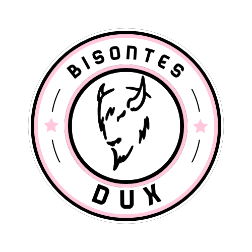

Dorsal 18 · Bisontes DUX
Jeanca
Jeanca es jugador de Bisontes DUX. Juega como lateral derecho y utiliza el dorsal 18.
- Equipo
- Bisontes DUX
- Función
- lateral derecho
- Dorsal
- 18

Bisontes DUXDorsal 18 · Bisontes DUX
Jeanca es jugador de Bisontes DUX. Juega como lateral derecho y utiliza el dorsal 18.